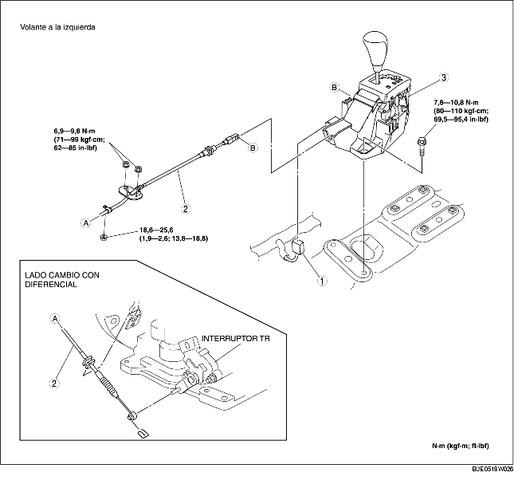
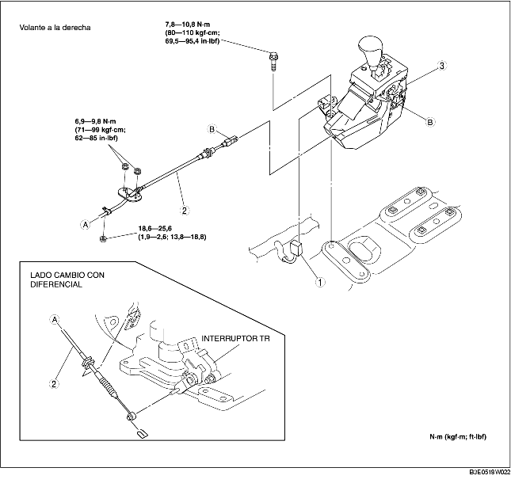

1. Quitar la tapa de la batería. [Véase REMOCION/INSTALACION BATERIA (ZJ, Z6)]. [Véase REMOCION/INSTALACION BATERIA (LF)].
2. Desconectar el cable negativo de la batería.
3. Quitar la batería, la caja de la batería y la bandeja de la batería. [Véase REMOCION/INSTALACION BATERIA (ZJ, Z6)]. [Véase REMOCION/INSTALACION BATERIA (LF)].
4. Quitar el cartucho del filtro de aire. [Véase REMOCION/INSTALACION SISTEMA DE ADMISION (ZJ, Z6)]. [Véase REMOCION/INSTALACION SISTEMA DE ADMISION (LF)].
5. Quitar la consola. (Véase REMOCION/INSTALACION CONSOLA).
6. Quitar el aislador de calor. (delantero y central)
7. Quitar según el orden indicado en la tabla.
8. Instalar en el orden contrario al de la remoción.


.
1. Quitar la grapa.
2. Quitar el cable de selección.
1. Colocar la clavija de referencia del conjunto palanca del cambio al orificio en el piso.
2. Apretar los pernos de fijación del conjunto palanca del cambio.
1. Instalar firmemente el cable de selección en la palanca del cambio.
2. Instalar firmemente el cable de selección en el soporte.
3. Comprobar que la palanca del cambio esté en posición P.
4. Bloquear el dispositivo de bloqueo y el bloqueo de seguridad del cable de selección (lado palanca del cambio) según el orden indicado en la figura.
5. Comprobar que el eje manual esté en posición P.
6. Instalar la grapa como se muestra en la figura.
7. Instalar la palanca del cambio a la palanca del eje manual de manera que el cable de selección no debe sustener cargas.
8. Comprobar que la extremidad de la palanca del eje manual sobresalga con respeto a la extremidad del cable de selección.
9. Instalar firmemente el cable de selección en el soporte.